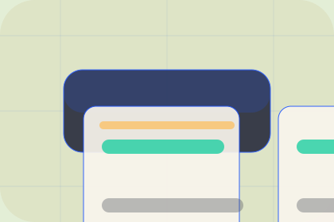

Before
The uncertainty, delay, or missed opportunity visitors bring into visibility.
Results / 02
Visibility shows what changes after the work: clearer decisions, visible progress, and proof points that connect the offer to real outcomes.
The layout connects before-and-after thinking with measured outcomes, making the result easy to scan without promising what the business cannot guarantee.
Explore ResultsThe uncertainty, delay, or missed opportunity visitors bring into visibility.
The clearer, safer, or more valuable state Prism is designed to support.
The visible cue that connects visibility to a believable decision, not a loose claim.
Results / 03
Decisions shows what changes after the work: clearer decisions, visible progress, and proof points that connect the offer to real outcomes.
The layout connects before-and-after thinking with measured outcomes, making the result easy to scan without promising what the business cannot guarantee.
Explore ResultsThe uncertainty, delay, or missed opportunity visitors bring into decisions.
The clearer, safer, or more valuable state Prism is designed to support.
The visible cue that connects decisions to a believable decision, not a loose claim.
Results / 04
Revenue shows what changes after the work: clearer decisions, visible progress, and proof points that connect the offer to real outcomes.
The layout connects before-and-after thinking with measured outcomes, making the result easy to scan without promising what the business cannot guarantee.
Explore ResultsThe uncertainty, delay, or missed opportunity visitors bring into revenue.
The clearer, safer, or more valuable state Prism is designed to support.
The visible cue that connects revenue to a believable decision, not a loose claim.
Results / 05
Savings shows what changes after the work: clearer decisions, visible progress, and proof points that connect the offer to real outcomes.
The layout connects before-and-after thinking with measured outcomes, making the result easy to scan without promising what the business cannot guarantee.
Explore ResultsPrism structures savings around before, after, and a clear next route so visitors can compare the block quickly before they plan a dashboard.
Plan DashboardResults / 06
Cases shows what changes after the work: clearer decisions, visible progress, and proof points that connect the offer to real outcomes.
The layout connects before-and-after thinking with measured outcomes, making the result easy to scan without promising what the business cannot guarantee.
Explore ResultsThe uncertainty, delay, or missed opportunity visitors bring into cases.
The clearer, safer, or more valuable state Prism is designed to support.
The visible cue that connects cases to a believable decision, not a loose claim.
Results / 07
Metrics shows what changes after the work: clearer decisions, visible progress, and proof points that connect the offer to real outcomes.
The layout connects before-and-after thinking with measured outcomes, making the result easy to scan without promising what the business cannot guarantee.
Explore ResultsThe uncertainty, delay, or missed opportunity visitors bring into metrics.
Results / 08
Reviews shows what changes after the work: clearer decisions, visible progress, and proof points that connect the offer to real outcomes.
The layout connects before-and-after thinking with measured outcomes, making the result easy to scan without promising what the business cannot guarantee.
Explore ResultsThe uncertainty, delay, or missed opportunity visitors bring into reviews.
The clearer, safer, or more valuable state Prism is designed to support.
The visible cue that connects reviews to a believable decision, not a loose claim.
Results / 09
Proof shows what changes after the work: clearer decisions, visible progress, and proof points that connect the offer to real outcomes.
The layout connects before-and-after thinking with measured outcomes, making the result easy to scan without promising what the business cannot guarantee.
Explore ResultsThe uncertainty, delay, or missed opportunity visitors bring into proof.
The clearer, safer, or more valuable state Prism is designed to support.
The visible cue that connects proof to a believable decision, not a loose claim.
Results / 10
Prism closes the results route with a clear action, a quick reminder of the value, and a low-friction way to plan a dashboard.
Visitors who are ready can use the primary action. Visitors who are still comparing can scan the section links, proof, and support routes before they plan a dashboard.
Plan DashboardThe final block keeps the choice simple: act now, compare one more proof route, or send enough detail for a focused response.
Plan Dashboarddecision clarity and visibility
A data catalogue experience with friendly dashboards, metadata proof, search panels, and AI-context positioning. Results ends with a direct path to plan a dashboard, plus enough context for visitors who still need to compare.

Plan DashboardInformation is provided for planning and should be reviewed for the final client, location, and operating rules.